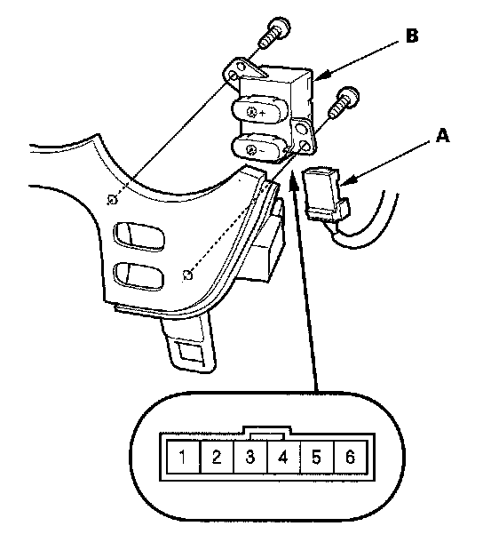

Dimmer Switch: Service and Repair
Dash Lights Brightness Controller Test/Replacement1. Remove the instrument fascia.

2. Disconnect the 6P connector (A) from the dash lights brightness controller (B).
3. Remove the two screws and the dash lights brightness controller.
4. Check for continuity between the No. 5 and No. 6 terminals.
- There should be continuity when the ILLUMI ( - ) button is pressed.
- There should be no continuity when the ILLUMI ( - ) button is released.
5. Check for continuity between the No. 4 and No. 6 terminals.
- There should be continuity when the ILLUMI (+) button is pressed.
- There should be no continuity when the ILLUMI (+) button is released.
6. If the continuity is as not specified, replace the controller.
7. Check the LED by connecting battery power to No. 1 terminal and ground to No. 2 terminal. The LED should come on.
8. If the LED does not work; replace the dash lights brightness controller assembly.